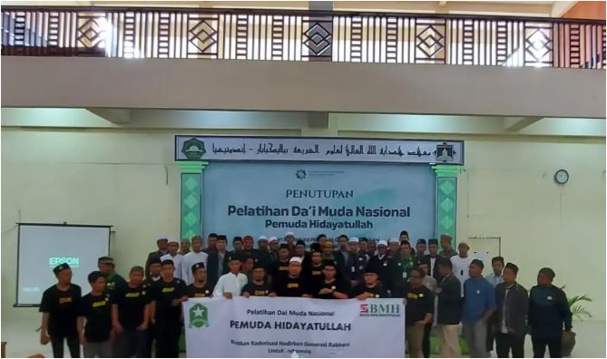
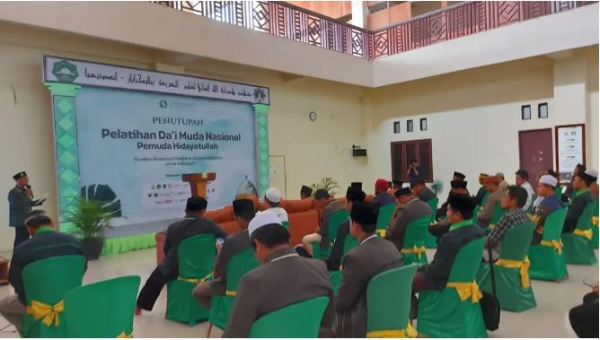

Pelatihan Da'i Muda
BMH Gelar Pelatihan Dai Muda Nasional di Balikpapan

Laznas BMH sukses gelar pelatihan dai muda nasional yang berlangsung selama sepekan (13-19/6) di Balikpapan.
"Program pelatihan dai muda nasional ini jadi konsen BMH untuk berikan layanan dakwah yang up to date, sehingga masyarakat dapat mengikuti perkembangan zaman dengan iman dan kebaikan," terang Direktur Utama Laznas BMH, Supendi (19/6).
Hal ini tidak lain karena dakwah selalu mengalami tantangan terbaru. Seperti dunia digital misalnya.
"Jadi para dai muda ini dapat pembekalan perihal bagaimana dakwah di era digital yang humanis dan berkarakter. Termasuk memberi pelatihan membedakan informasi yang perlu, berguna dengan informasi yang tidak berguna. Karena dai bagaimanapun ada masyarakat binaannya. Semakin cerdas dai semakin baik masyarakat yang dibinanya," imbuh Supendi.
Pelatihan ini berikan satu kesan mendalam bagi para peserta yang hadir dari Aceh hingga Papua.

"Kami melihat pelatihan dai muda nasional ini sangat menggugah kesadaran kami akan perkembangan zaman sekaligus memberi panduan bagaimana dakwah yang baik di dunia digital. Sangat bermanfaat bagi saya," ungkap seorang dai muda dari Maluku Utara, Rahman Masir (33).
Usai pelatihan para dai akan kembali ke tempat tugas masing-masing dan terus ikut mencerdaskan kehidupan bangsa melalui gerakan dakwah.
"Insha Allah semua ilmu yang kami terima ini akan jadi kekuatan kami dalam dakwah yang mencerdaskan anak bangsa. Bismillah semoga semakin membawa barokah bagi umat dan bangsa," tutur dai muda asal Sumatera Utara, Asari Nasution.
Kembali